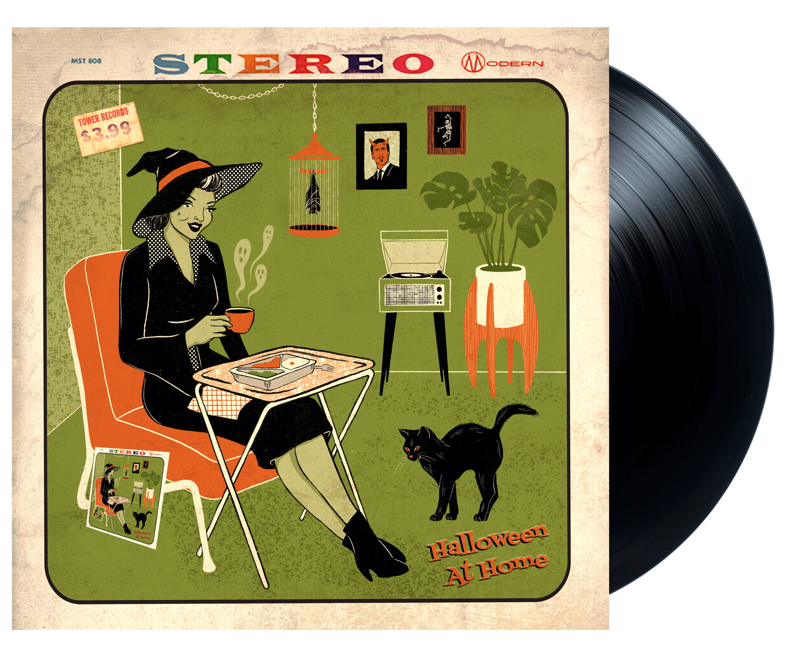

SPOOKY TUNES FOR YOUR HALLOWEEN QUARANTINE

SIDE A
- Castin' My Spell - Johnny Otis
- I Was A Teenage Werewolf - The Cramps
- Halloween - The Misfits
- Bela Lugosi's Dead - Bauhaus
- It's Halloween - The Shaggs
SIDE B
- Season Of The Witch - Donovan
- Release The Bats - The Birthday Party
- Planet Claire - The B-52's
- I Walked With A Zombie - Roky Erickson
- Whistling Past The Graveyard - Screamin' Jay Hawkins
- Monster Mash - Bobby "Boris" Pickett & The Crypt-Kickers
Castin' My Spell
- Johnny Otis
- I took a black cat, a cave bat, and threw them in a pot pot
Pot pot, pot pot
I took a blue snake, a green snake, and tied them in a knot knot
Knot knot, knot knot
I took a hog jaw, a dog's paw, and hung them on the line line
Line line, line line
I took a horse hair, a green pear, and made a crazy sign sign
Sign sign, sign sign
I'm castin' my spell on you, I'm castin' my spell on you
I'm castin' my spell on you, you'll never never be untrue
I took a goat's tooth, an old shoe, and put them in the ground ground
Ground ground, ground ground
I took an old dish, a dry fish, and made a crazy sound sound
Sound sound, sound sound
I took a goose egg, a frog leg, and hid them in a sack sack
Sack sack, sack sack
I got a Hindu, to tattoo, a genii on my back back
Back back, back back
I'm castin' my spell on you, I'm castin' my spell on you
I'm castin' my spell on you, you'll never never be untrue
I took a black cat, a cave bat, and threw them in a pot pot
Pot pot, pot pot
I took a blue snake, a green snake, and tied them in a knot knot
Knot knot, knot knot
I took a hog jaw, a dogs paw, and hung them on the line line
Line line, line line
I took a horse hair, a green pear, and made a crazy sign sign
Sign sign, sign sign
I'm castin' my spell on you, I'm castin' my spell on you
I'm castin' my spell on you, you'll never never be untrue
You'll never never be untrue
You'll never never be untrue
You'll never never be untrue
You'll never never be untrue
You'll never never be untrue
Back to Top
I Was A Teenage Werewolf
- The Cramps
- I was a teenage werewolf
Braces on my fangs
I was a teenage werewolf
And no one even said thanks
And no one made me stop
I had a teen-land mind
I had to blow my top
And under teen full moon
No one could make me stop
No one could make me stop
A teenage werewolf
Parallel bars
A teenage girlfriend
Got a lot of scars
Somebody please make me stop
Ohhh please…
You know, I have puberty rights
And I have puberty wrongs
No one understood me
All my teeth were so long
And no one made me stop
A Midwest monster
Of the highest grade
All my teachers thought
It was growing pains, oh no no
Somebody stop this pain, ohhh…
Back to Top
Halloween
- The Misfits
- Bonfires burning bright
Pumpkin faces in the night
I remember Halloween
Dead cats hanging from poles
Little dead are out in droves
I remember Halloween
Brown-leafed vertigo
Where skeletal life is known
I remember Halloween
This day, anything goes
Burning bodies hang from poles
I remember Halloween
Halloween
Halloween
Halloween
Halloween
Candy apples and razorblades
Little dead are soon in graves
I remember Halloween
This day, anything goes
Burning bodies hang from poles
I remember Halloween
Halloween
Halloween
Halloween
Halloween
Halloween
Halloween
Halloween
Halloween
Halloween
Halloween
Halloween
Halloween
Back to Top
Bela Lugosi's Dead
- Bauhaus
- White on white translucent black capes
Back on the rack
Bela Lugosi's dead
The bats have left the bell tower
The victims have been bled
Red velvet lines the black box
Bela Lugosi's dead
Bela Lugosi's dead
Undead undead undead
Undead undead undead
The virginal brides file past his tomb
Strewn with time's dead flowers
Bereft in deathly bloom
Alone in a darkened room
The count
Bela Lugosi's dead
Bela Lugosi's dead
Bela Lugosi's dead
Undead undead undead
Undead undead undead
Undead
Oh Bela
Bela's undead
Oh Bela
Bela's undead
Bela's undead
Oh Bela
Bela's undead
Oh Bela
Undead
Back to Top
It's Halloween
- The Shaggs
- It's Halloween
It's Halloween
It's time for scares
It's time for screams
It's Halloween
It's Halloween
The ghosts will spook
The spooks will scare
Why, even Dracula will be there
It's time for games
It's time for fun
Not for just one
But for everyone
The jack-o-lanterns are all lit up
All the dummies are made and stuffed
By just looking you will see
It's this time of year again
It's Halloween
It's Halloween
All the kids are happy and gay
There doesn't seem to be a cloud in their way
But when it's over and they've had all their fun
They'll wish that Halloween had just begun
Oh, there are witches, goblins, vampires, devils, Frankensteins and zombies
And there are tramps, Cinderellas, pirates, angels and gypsies
So let's have lots of fun and give many cheers
For Halloween comes but once a year
It's time for games
It's time for fun
Not for just one
But for everyone
It's Halloween
It's Halloween
It's Halloween
It's Halloween
It's Halloween!
Back to Top
Season Of The Witch
- Donovan
- When I look out my window
Many sights to see
And when I look in my window
So many different people to be
That it's strange, so strange
You've got to pick up every stitch
You've got to pick up every stitch
You've got to pick up every stitch
Mmm, must be the season of the witch
Must be the season of the witch, yeah
Must be the season of the witch
When I look over my shoulder
What do you think I see?
Some other cat looking over
His shoulder at me
And he's strange, sure is strange
You've got to pick up every stitch
You've got to pick up every stitch, yeah
Beatniks are out to make it rich
Oh no, must be the season of the witch
Must be the season of the witch, yeah
Must be the season of the witch
You've got to pick up every stitch
The rabbits running in the ditch
Beatniks are out to make it rich
Oh no must be the season of the witch
Must be the season of the witch
Must be the season of the witch
When I go
When I look out my window
What do you think I see?
And when I look in my window
So many different people to be
It's strange, sure is strange
You've got to pick up every stitch
You've got to pick up every stitch
Two rabbits running in the ditch
Oh no, must be the season of the witch
Must be the season of the witch, yeah
Must be the season of the witch
When I go, when I go
Back to Top
Release The Bats
- The Birthday Party
- Whoooahh! Bite! Whoooah! Bite!
Release the bats! Release the bats!
Don't tell me that it doesn't hurt
A hundred fluttering in your skirt
Don't tell me that it doesn't hurt
My baby is alright
She doesn't mind a bit of dirt
She says "horror vampire bat bite"
She says "horror vampire
How I wish those bats would bite"
Whoooah! Bite! Whoooah! Bite!
Release the bats! Release the bats!
Pump them up and explode the things
Her legs are chafed by sticky wings
Sticky sticky little things
My baby is a cool machine
She moves to the pace of her generator
Says damn that sex supreme
She says damn that horror bat
Sex vampire, cool machine
Release the bats! Release the bats!
Release them!
Baby is a cool machine
She moves to the pulse of a generator
She says damn that sex supreme
She says, she says damn that horror bat
Sex horror sex bat sex horror sex vampire
Sex bat horror vampire sex
Cool machine
Horror bat. Bite!
Cool Machine. Bite!
Sex vampire. Bite!
Back to Top
Planet Claire
- The B-52's
- She came from Planet Claire
I knew she came from there
She drove a Plymouth Satellite
Oh, faster than the speed of light
Planet Claire has pink air
All the trees are red
No one ever dies there
No one has a head
Some say she's from Mars
Or one of the seven stars
That shine after 3:30 in the morning
Well, she isn't!
She came from Planet Claire
She came from Planet Claire
She came from Planet Claire
Back to Top
I Walked With A Zombie
- Roky Erickson
- I walked with a zombie
I walked with a zombie
I walked with a zombie last night
I walked with a zombie
I walked with a zombie
I walked with a zombie last night
I walked with a zombie
I walked with a zombie
I walked with a zombie last night
I walked with a zombie (he walked with a zombie)
I walked with a zombie (he walked with a zombie)
I walked with a zombie last night
I walked with a zombie (he walked with a zombie)
I walked with a zombie (he walked with a zombie)
I walked with a zombie last night
I walked with a zombie
I walked with a zombie
I walked with a zombie last night
I walked with a zombie
I walked with a zombie
I walked with a zombie last night
Back to Top
Whistling Past The Graveyard
- Screamin' Jay Hawkins
- Coming on the night train
With an arm full of box cars
On the wings of a magpie, 'cross a hooligan night
Busted up a chifforobe
Way out by the cocomo
Cooked up a mess a mulligan and got into a fight
Whistlin' past the graveyard
Steppin' on a crack
I'm a mean motherhubbard
Papa one eyed jack
You probably seen me sleepin' out by the railroad tracks
Ask the prince of darkness 'bout the smoke from the stack
Sometimes I kill a jackal and suck out all the blood
Steal myself a station-wagon, drive it into the mud
Whistlin' past the graveyard
Steppin' on a crack
I'm a mean motherhubbard
Papa one eyed jackbr
I know you've seen my headlights and the honkin' of my horn
I'm callin' out my bloodhounds chase the devil out the corn
I was born in a taxi cab I ain't never goin' home
Whistlin' past the graveyard
Steppin' on a crack
I'm a mean motherhubbard
Papa one eyed jack
My eyes have seen the glory
Of the drainin' of the ditch
I'm comin' to Baton Rouge
To find myself a witch
I'm gonna switch me up a couple of 'em every time it rains
You gotta see a locomotive
Probably thinkin' it's a train
Whistlin' past the graveyard
Steppin' on a crack
I'm a mean motherhubbard
Papa one eyed jack
What you think is sunshine
Is just a twinkle in my eye
I got a ring around my finger called the 4th of July
When I get lonesome, a tear falls from my cheek
There's gonna be an ocean in the middle of the week
Whistlin' past the graveyard
Steppin' on a crack
I'm a mean motherhubbard
Papa one eyed jack
I come in on the night train
With an arm full of box cars
On the wings of a magpie
Cross a hooligan night
I'm gonna tear off a rainbow
And wear it for a tie
I never told the truth
So how in the hell can I tell a lie
Whistlin' past the graveyard
Steppin' on a crack
I'm a mean motherhubbard
Papa one eyed jack
Back to Top
Monster Mash
- Bobby "Boris" Pickett & The Crypt-Kickers
- I was working in the lab, late one night
When my eyes beheld an eerie sight
For my monster from his slab, began to rise
And suddenly to my surprise
He did the mash, he did the monster mash
The monster mash, it was a graveyard smash
He did the mash, it caught on in a flash
He did the mash, he did the monster mash
From my laboratory in the castle east
To the master bedroom where the vampires feast
The ghouls all came from their humble abodes
To get a jolt from my electrodes
They did the mash, they did the monster mash
The monster mash, it was a graveyard smash
They did the mash, it caught on in a flash
They did the mash, they did the monster mash
The Zombies were having fun, the party had just begun
The guests included Wolfman, Dracula, and his son
The scene was rockin', all were digging the sounds
Igor on chains, backed by his baying hounds
The coffin-bangers were about to arrive
With their vocal group, 'The Crypt-Kicker Five'
They played the mash, they played the monster mash
The monster mash, it was a graveyard smash
They played the mash, it caught on in a flash
They played the mash, they played the monster mash
Out from the coffin', Drac's voice did ring
Seems he was troubled by just one thing
He opened the lid and shook his fist and said
"Whatever happened to my Transylvania Twist?
It's now the mash, it's now the monster mash
The monster mash, it was graveyard smash
It's now the mash, it caught on in a flash
It's now the mash, it's now the monster mash
Now everything's cool, Drac's a part of the band
And my Monster Mash is the hit of the land
For you, the living this mash was meant too
When you get to my door, tell them Boris sent you
Then you can mash, then you can monster mash
The monster mash and do my graveyard smash
Then you can mash, you'll catch on in a flash
Then you can mash, then you can monster mash
Back to Top